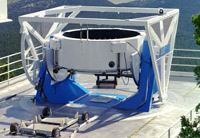

|
The Science of SDSS |
Apache Point Observatory |
Telescope Details
Tour the SDSS Site | Data Processing Challenges | FAQ |
The 2.5-meter Sloan telescope is unusual because it has a remarkably wide-angle view, and because it was made specifically to create a map of the sky. The telescope's camera uses electronic sensors that turn light into a stream of digitized data. The telescope also uses two spectrographs, instruments that probe the composition and distance of celestial objects. Here you can see the fully assembled telescope pointing toward zenith. The boxy metal structure is the outer wind baffle, mounted separately from the rest of the telescope. It helps prevent the wind from shaking the telescope.
This is what the telescope looked like before the secondary mirror assembly was attached. The primary mirror will sit inside that cylindrical "drum." It's easy to point out from the photo that this is an altitude-azimuth mounted telescope. That means that the telescope pivots around the vertical axis and also rotates in the direction from the horizon to the zenith. This is a newer type of telescope mounting, and increasingly popular because it's less bulky than the traditional right ascension/declination mounting. It's also more challenging to control, because the telescope motion doesn't correspond to the apparent nightly motion of stars in the sky.
In this photo, the Sloan telescope's skeleton is complete, but it still
needs some "fleshing out." The secondary mirror hasn't been installed
yet; neither have the internal light baffles or the external wind
baffle.
{kind=link}
{kind=link}
{kind=link}